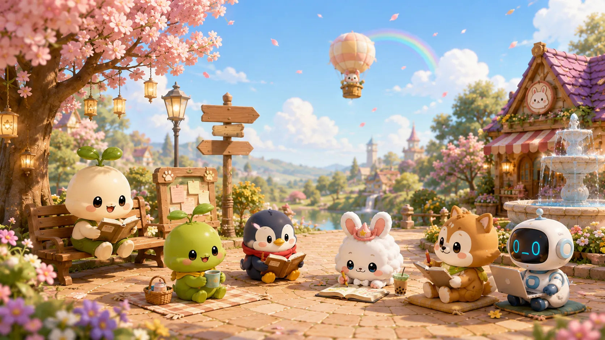

Frequently Asked Questions
Everything you need to know about Pomogochi.
Find instant answers for timers, buddies, room decor, framework tools, and extension settings.
Pomogochi is a cozy desktop companion & Pomodoro focus browser extension. It lives in your browser to help you stay focused, recharge with healing ASMR scenes, organize thoughts with Two-Beat Thinking, and collect cute buddies along your productivity journey.
Yes! Core features including the smart Pomodoro timer, default floating buddies, healing ASMR ambient sounds, and basic tools are 100% free forever. Optional cosmetics and room items can be unlocked with seeds earned by completing focus sessions.
Pomogochi supports all major Chromium-based web browsers, including Google Chrome, Microsoft Edge, Brave, Vivaldi, and Opera.
You can customize work and break intervals (e.g. 25 minutes of focus / 5 minutes of rest). During your focus time, your floating buddy stays right by your side with physics animations and cheers you on to build steady work habits.
Yes! Pomogochi offers 16 immersive ASMR healing scenes and ambient soundscapes (rain, cozy fireplace, cafe, forest, ocean waves) that you can mix and match during your breaks or focus sessions.
As you complete focus sessions and achieve daily goals, you earn Sprout Seeds and Coins. You can visit the Village Store to unlock 20+ unique buddies, decorate your cozy room, and level up buddy affinity!
Yes! Different buddies provide helpful passive buffs—such as extra seed drop rates, faster rest recovery, or calming ambient effects that make your focus time even more rewarding.
Two-Beat Thinking is Pomogochi's built-in framework system for mental clarity. Beat 1 lets you quickly dump raw ideas and thoughts, while Beat 2 organizes them using 6 intuitive frameworks (e.g. Action Matrix, Eisenhower, SWOT) into actionable steps.
Not at all. The floating buddy and widgets feature jelly physics and click-through transparency options, so you can drag them anywhere on your screen or minimize them whenever you need full page focus.
Your privacy is our top priority. All your notes, timer statistics, and room collection data remain strictly stored inside your local browser. We do not track or sell your browsing history.
Yes! By signing into your Chrome profile sync or logging into your Pomogochi account, your unlocked buddies, room decor, and statistics will seamlessly sync across all your computers.
Still have questions?
Can't find what you're looking for? Reach out to our friendly community or drop us a message anytime!